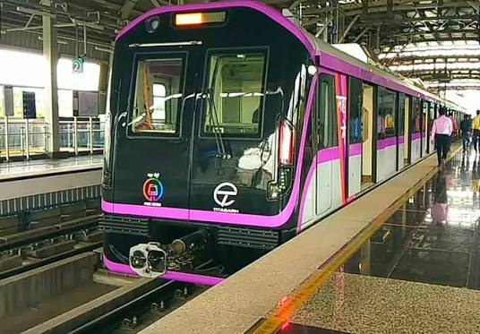

Explore historical landmarks, travel through Pune Metro, discover amazing hotels and experience the culture of Pune all from one platform.
Tourist Places
Metro Stations
Hotels
Support

Travel across Pune quickly using Pune Metro. Reach major attractions with minimum travel time and enjoy a hassle-free journey.
Luxury stay near Ramwadi Metro Station with premium rooms and modern facilities.
⭐ 4.8 / 5
Book NowComfortable rooms close to Shivajinagar Metro with excellent dining experience.
⭐ 4.6 / 5
Book NowPremium hotel located near Civil Court Metro perfect for tourists and families.
⭐ 4.7 / 5
Book NowFind the quickest metro route to every tourist destination in Pune.
Book trusted hotels located near metro stations.
Discover famous historical places, parks and attractions.
Get travel assistance anytime during your journey.
"MetroTour Explorer made my Pune trip extremely easy. Metro guidance and hotel recommendations saved a lot of time."
Start your journey today with MetroTour Explorer and experience Pune like never before.
Start Exploring